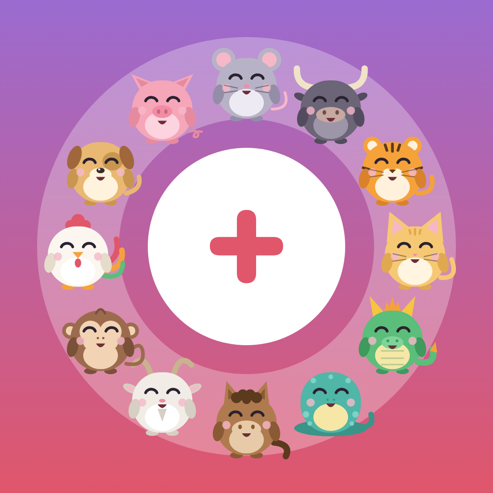

Maths games for kids · made by Troy Lee
A cheerful maths app for kids. Children pick one of 12 zodiac buddies, who explains each kind of problem step by step with a friendly voice and pictures, then cheers them on: counting, adding and subtracting, times tables, fractions, shapes, measuring, time, money and word problems. It follows the maths taught in Vietnamese schools and speaks English and Vietnamese. No ads, no in-app purchases, no tracking.